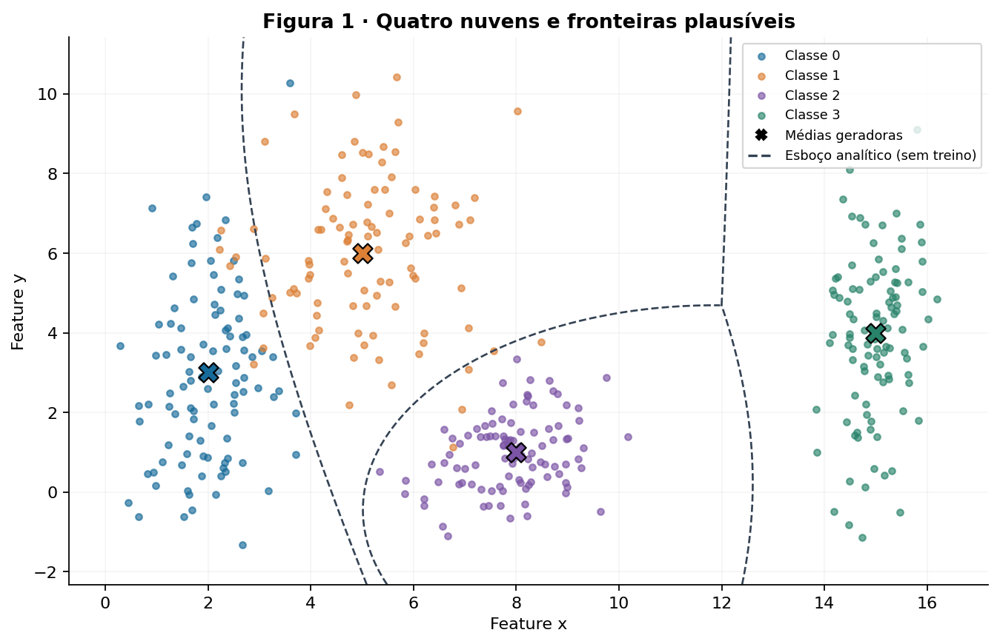
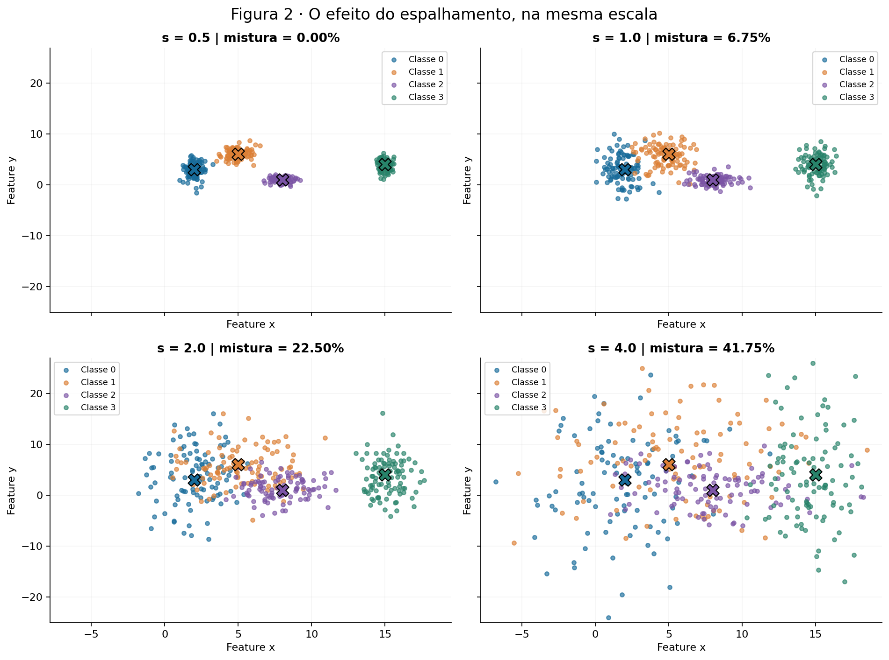
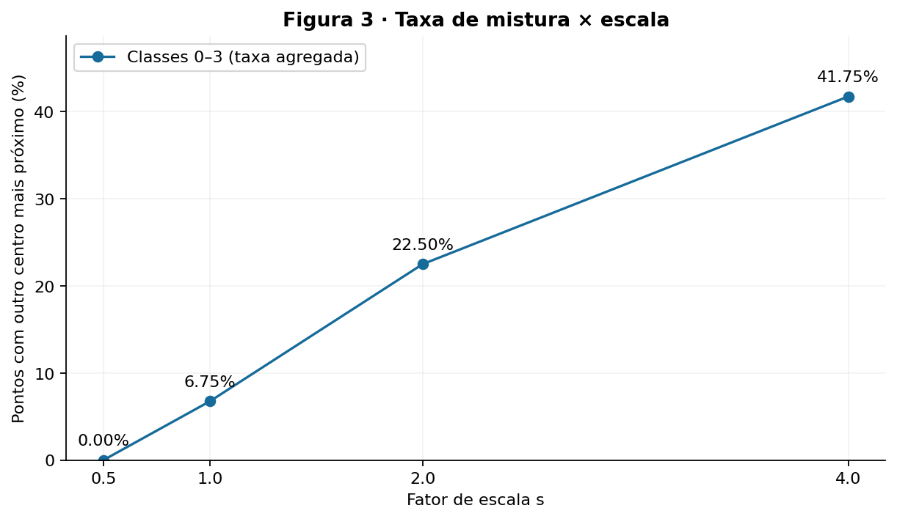
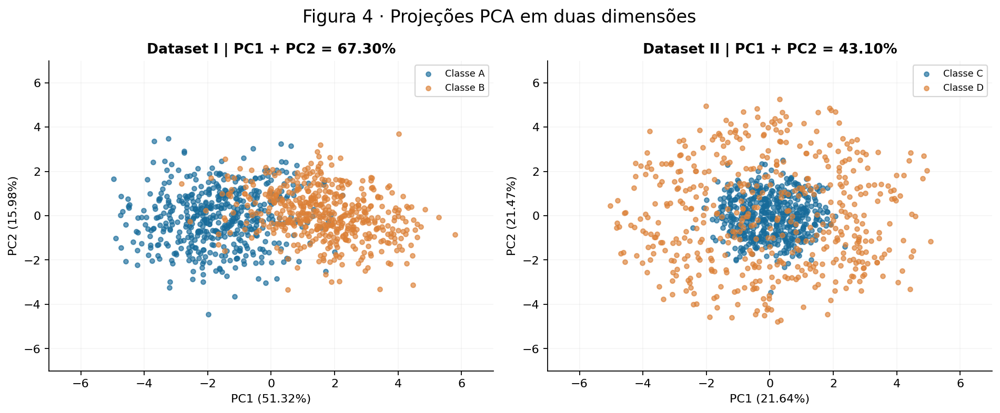
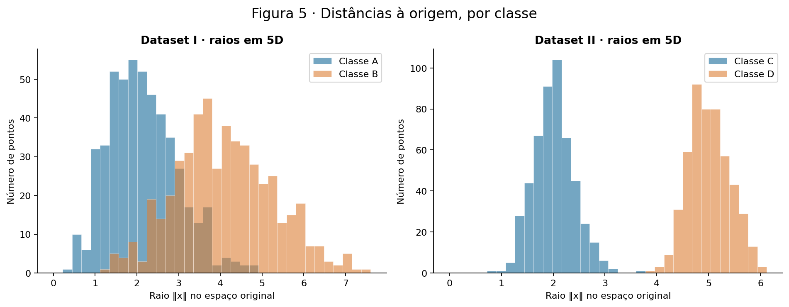
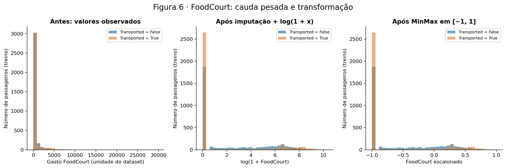

Redes neurais · Análise de dados
O espalhamento dos dados conecta três problemas: separar nuvens, reconhecer estruturas radiais e preparar entradas para a ativação tanh.
Relatório computacional reproduzível. Uma única semente: rng = np.random.default_rng(42). Nenhum modelo foi treinado.
Abordagem: gerar gaussianas bidimensionais, aumentar seus desvios padrão e comparar uma medida de mistura com a separabilidade geométrica das amostras.
Foram geradas 400 amostras, 100 por classe. As coordenadas x e y são independentes dentro de cada classe; a covariância é diagonal, com as variâncias iguais aos quadrados dos desvios indicados.
| Classe | Média μ | Desvio padrão σ | Amostras |
|---|---|---|---|
| 0 | [2, 3] | [0,8; 2,5] | 100 |
| 1 | [5, 6] | [1,2; 1,9] | 100 |
| 2 | [8, 1] | [0,9; 0,9] | 100 |
| 3 | [15, 4] | [0,5; 2,0] | 100 |

Além do dataset original, foram gerados quatro novos datasets, cada um com 400 pontos e as mesmas quatro classes. A sequência de sorteios é: original, s = 0,5, s = 1,0, s = 2,0 e s = 4,0. São realizações independentes: o painel s = 1 da Figura 2 não repete os pontos da Figura 1. Isso mantém o mesmo gerador aleatório e torna explícita a pequena variação amostral entre painéis.

A razão de separação usa os parâmetros da distribuição, não estimativas amostrais:
| Par de classes | rᵢⱼ em s = 1 |
|---|---|
| 0–1 | 1,3258 |
| 0–2 | 2,4802 |
| 0–3 | 4,4960 |
| 1–2 | 2,3800 |
| 1–3 | 3,6422 |
| 2–3 | 3,5422 |
O menor valor é 1,3258, no par 0–1. Como rᵢⱼ(s) = rᵢⱼ(1)/s, em s = 2 esse mínimo cai para 0,6629, sem necessidade de gerar novos dados. A média dos desvios resume as direções de dispersão, mas perde informação de anisotropia; portanto, r não é um teste de separabilidade.
A taxa de mistura é a fração de pontos cuja média geradora mais próxima, pela distância euclidiana, pertence a outra classe. São apenas distâncias às quatro médias, calculadas com NumPy.
| s | Pontos misturados / 400 | Taxa de mistura | Pares com fechos convexos sobrepostos |
|---|---|---|---|
| 0.5 | 0 / 400 | 0,00% | Nenhum |
| 1.0 | 27 / 400 | 6,75% | 0–1, 1–2 |
| 2.0 | 90 / 400 | 22,50% | 0–1, 0–2, 1–2 |
| 4.0 | 167 / 400 | 41,75% | 0–1, 0–2, 0–3, 1–2, 1–3, 2–3 |

Entre as escalas avaliadas, a primeira perda de separação estrita por retas ocorre em s = 1. Nesse ponto, o menor r é 1,3258; ele diminui de 2,6517 em s = 0,5 para 1,3258 em s = 1. Não existe um limiar universal r = 1: a forma e as direções das nuvens também importam.
Para sustentar a conclusão, calculei os fechos convexos de cada classe e verifiquei suas interseções pelo teorema dos eixos separadores. Em s = 0,5 todos os pares admitem uma reta separadora; em s = 1 os fechos dos pares 0–1 e 1–2 já se interceptam. Uma taxa de mistura positiva, sozinha, não provaria esse resultado. A localização exata da transição entre 0,5 e 1 não foi investigada.
Essa conclusão se refere às amostras geradas. Gaussianas não degeneradas têm densidade positiva em todo o plano: na população, a separação perfeita já é impossível em qualquer s > 0, mesmo quando uma amostra finita parece perfeitamente separada.
No dataset original, as classes 0 e 1 se misturam, e há também contato entre 1 e 2; os fechos convexos desses dois pares se sobrepõem. A classe 3 fica mais isolada, enquanto a classe 2 tem formato mais compacto. Uma única reta produz dois semiplanos e não define quatro regiões distintas. Um classificador multiclasses com escores lineares pode criar várias fronteiras, mas não separar perfeitamente estes pares com fechos sobrepostos.
O esboço da Figura 1 compara as log-densidades gaussianas conhecidas, com probabilidades de classe iguais: gₖ(x) = −½ Σⱼ ((xⱼ − μₖⱼ)/σₖⱼ)² − Σⱼ log σₖⱼ. Desenhei gᵢ = gⱼ apenas onde essas duas classes dominam as demais. As variâncias diferentes produzem curvas que uma rede com ativações não lineares poderia aproximar; nenhuma rede foi ajustada.
Com o aumento do espalhamento, cresce a ambiguidade probabilística entre classes. Fronteiras mais flexíveis podem reduzir erros decorrentes de uma escolha linear inadequada, mas não eliminam o erro de Bayes causado por densidades sobrepostas. “Região onde a rede necessariamente erra” significa risco irredutível de errar em novas observações, não que cada ponto dessa região precise receber o rótulo errado. Uma rede também poderia memorizar uma amostra finita. Uma combinação arbitrariamente grande de retas com decisões não lineares pode fazer regiões complexas; isso é diferente de um classificador com escores lineares.
"""Gera todas as análises e figuras, sem treinar modelos. Execute da raiz do repo."""
from pathlib import Path
import hashlib
import json
import numpy as np
import pandas as pd
import matplotlib
matplotlib.use('Agg')
import matplotlib.pyplot as plt
from matplotlib.lines import Line2D
from sklearn.decomposition import PCA
from sklearn.preprocessing import MinMaxScaler, OneHotEncoder
ROOT = Path(__file__).resolve().parents[1]
FIG = ROOT / 'assets' / 'figures'
RES = ROOT / 'results'
FIG.mkdir(parents=True, exist_ok=True)
RES.mkdir(exist_ok=True)
# Única fonte de aleatoriedade: não reinicializar entre exercícios.
rng = np.random.default_rng(42)
plt.rcParams.update({'font.family': 'DejaVu Sans', 'font.size': 10,
'axes.spines.top': False, 'axes.spines.right': False,
'figure.facecolor': '#ffffff', 'axes.facecolor': '#ffffff',
'axes.titleweight': 'bold', 'savefig.dpi': 160})
COLORS = ['#176b9a', '#dc8036', '#7b54a5', '#28836a']
metrics = {}
def save(fig, number):
fig.savefig(FIG / f'figura-{number}.png', bbox_inches='tight')
plt.close(fig)
def scatter(ax, x, y, names, centers=None):
for k, name in enumerate(names):
pts = x[y == k]
ax.scatter(pts[:, 0], pts[:, 1], s=15, color=COLORS[k], alpha=.65, label=name)
if centers is not None:
ax.scatter(*centers[k], marker='X', s=140, color=COLORS[k], edgecolor='black', zorder=5)
ax.legend(fontsize=8)
ax.set(xlabel='Feature x', ylabel='Feature y')
ax.grid(alpha=.12)
# Exercício 1 A: gaussianas independentes em x e y.
means = np.array([[2, 3], [5, 6], [8, 1], [15, 4]], dtype=float)
stds = np.array([[.8, 2.5], [1.2, 1.9], [.9, .9], [.5, 2.]])
labels = np.repeat(np.arange(4), 100)
def clouds(scale):
return np.vstack([rng.normal(m, scale * sd, size=(100, 2)) for m, sd in zip(means, stds)])
# Teste exato até tolerância numérica: fechos convexos e eixos separadores.
# Não ajusta classificador. Fechos convexos que se interceptam impedem separação estrita por reta.
def hull(points):
p = sorted(set(map(tuple, points)))
def cross(o, a, b):
return (a[0]-o[0])*(b[1]-o[1]) - (a[1]-o[1])*(b[0]-o[0])
lower, upper = [], []
for q in p:
while len(lower) >= 2 and cross(lower[-2], lower[-1], q) <= 0:
lower.pop()
lower.append(q)
for q in reversed(p):
while len(upper) >= 2 and cross(upper[-2], upper[-1], q) <= 0:
upper.pop()
upper.append(q)
return np.array(lower[:-1] + upper[:-1])
def intersect(a, b):
for poly in (a, b):
edges = np.roll(poly, -1, axis=0) - poly
axes = np.column_stack([-edges[:, 1], edges[:, 0]])
axes /= np.linalg.norm(axes, axis=1)[:, None]
pa, pb = a @ axes.T, b @ axes.T
if np.any(pa.max(axis=0) < pb.min(axis=0)-1e-10) or np.any(pb.max(axis=0) < pa.min(axis=0)-1e-10):
return False
return True
def overlaps(x):
hs = [hull(x[labels == k]) for k in range(4)]
return [f'{i}–{j}' for i in range(4) for j in range(i+1, 4) if intersect(hs[i], hs[j])]
original = clouds(1)
metrics['original_overlap_pairs'] = overlaps(original)
fig, ax = plt.subplots(figsize=(10, 6))
scatter(ax, original, labels, [f'Classe {k}' for k in range(4)], means)
# Esboço informado pelas densidades geradoras conhecidas, com priors iguais.
# Não é uma rede ajustada: fronteiras quadráticas ilustram decisões plausíveis.
lo, hi = original.min(axis=0)-1, original.max(axis=0)+1
gx, gy = np.meshgrid(np.linspace(lo[0], hi[0], 450), np.linspace(lo[1], hi[1], 450))
grid = np.column_stack([gx.ravel(), gy.ravel()])
scores = -.5 * (((grid[:, None, :] - means) / stds)**2).sum(axis=2) - np.log(stds).sum(axis=1)
for i in range(4):
for j in range(i+1, 4):
# Desenhar igualdade apenas onde i e j superam as outras classes.
others = [k for k in range(4) if k not in (i, j)]
delta = scores[:, i]-scores[:, j]
relevant = np.maximum(scores[:, i], scores[:, j]) >= scores[:, others].max(axis=1)
z = np.ma.masked_where(~relevant.reshape(gx.shape), delta.reshape(gx.shape))
if z.count() and z.min() < 0 < z.max():
ax.contour(gx, gy, z, levels=[0], colors='#344354', linewidths=1.2, linestyles='--')
handles, names = ax.get_legend_handles_labels()
handles += [Line2D([], [], color='black', marker='X', linestyle='None', label='Médias geradoras'),
Line2D([], [], color='#344354', linestyle='--', label='Esboço analítico (sem treino)')]
ax.legend(handles=handles, fontsize=8, loc='upper right')
ax.set(title='Figura 1 · Quatro nuvens e fronteiras plausíveis', xlim=(lo[0], hi[0]), ylim=(lo[1], hi[1]))
save(fig, 1)
# Exercício 1 B: quatro novas realizações independentes; mesmas médias.
scales = [.5, 1., 2., 4.]
datasets = [clouds(s) for s in scales]
rates = [float((np.linalg.norm(x[:, None, :] - means, axis=2).argmin(axis=1) != labels).mean()) for x in datasets]
metrics['mixture'] = dict(zip(map(str, scales), rates))
metrics['overlap_pairs'] = {str(s): overlaps(x) for s, x in zip(scales, datasets)}
pairs = [{'par': f'{i}–{j}', 'r': float(np.linalg.norm(means[i]-means[j]) / (stds[i].mean()+stds[j].mean()))}
for i in range(4) for j in range(i+1, 4)]
metrics['separation'] = pairs
fig, axs = plt.subplots(2, 2, figsize=(12, 9), sharex=True, sharey=True)
all_points = np.vstack(datasets)
lo, hi = all_points.min(axis=0)-1, all_points.max(axis=0)+1
for ax, s, x, rate in zip(axs.flat, scales, datasets, rates):
scatter(ax, x, labels, [f'Classe {k}' for k in range(4)], means)
ax.set(title=f's = {s:.1f} | mistura = {rate:.2%}', xlim=(lo[0], hi[0]), ylim=(lo[1], hi[1]))
fig.suptitle('Figura 2 · O efeito do espalhamento, na mesma escala', fontsize=15)
fig.tight_layout()
save(fig, 2)
fig, ax = plt.subplots(figsize=(9, 4.7))
ax.plot(scales, np.array(rates)*100, 'o-', color=COLORS[0], label='Classes 0–3 (taxa agregada)')
for s, rate in zip(scales, rates):
ax.annotate(f'{rate:.2%}', (s, rate*100), xytext=(0, 9), textcoords='offset points', ha='center')
ax.set(title='Figura 3 · Taxa de mistura × escala', xlabel='Fator de escala s', ylabel='Pontos com outro centro mais próximo (%)', xticks=scales, ylim=(0, max(rates)*100+7))
ax.legend(); ax.grid(alpha=.15)
save(fig, 3)
Abordagem: comparar duas gaussianas com centros deslocados a uma estrutura de núcleo e casca. A PCA serve para visualizar; as medidas de distância e raio são calculadas nas cinco dimensões originais.
Foram sorteadas 500 amostras para A e 500 para B. As médias são [0, 0, 0, 0, 0] e [1,5; 1,5; 1,5; 1,5; 1,5]. As matrizes abaixo foram usadas integralmente, e seus autovalores foram verificados como positivos.
ΣA = [1,0 0,8 0,1 0,0 0,0
0,8 1,0 0,3 0,0 0,0
0,1 0,3 1,0 0,5 0,0
0,0 0,0 0,5 1,0 0,2
0,0 0,0 0,0 0,2 1,0]
ΣB = [ 1,5 −0,7 0,2 0,0 0,0
−0,7 1,5 0,4 0,0 0,0
0,2 0,4 1,5 0,6 0,0
0,0 0,0 0,6 1,5 0,3
0,0 0,0 0,0 0,3 1,5]A tem correlação 0,8 entre as duas primeiras features; em B, a correlação é −0,7/1,5 ≈ −0,4667. As variâncias de B são maiores. Isso altera a orientação e o tamanho das nuvens, além do deslocamento entre centros.
Para cada ponto, sorteei v ∼ N(0, I₅) e normalizei u = v/‖v‖, obtendo direções uniformes na esfera unitária em ℝ⁵. Os raios são independentes das direções: ρC ∼ N(2; 0,4²) e ρD ∼ N(5; 0,4²). Cada ponto é x = ρu. Foram gerados 500 pontos por classe e todos os raios sorteados foram positivos nesta execução.
Usei PCA separada para cada dataset, com centralização e SVD completa, sem padronizar as features. As dimensões sintéticas têm a mesma unidade, e preservar suas variâncias faz parte da comparação. A PCA procura direções de maior variância e não usa os rótulos para escolher os componentes. Referência: PCA do scikit-learn.

| Dataset | Distância entre centros amostrais (5D) | PC1 | PC2 | PC1 + PC2 |
|---|---|---|---|---|
| I | 3,3316 | 51,32% | 15,98% | 67,30% |
| II | 0,2347 | 21,64% | 21,47% | 43,10% |
Os dois primeiros componentes explicam 67,30% no Dataset I e 43,10% no Dataset II. A projeção preserva melhor a informação discriminativa aparente do Dataset I, cujo deslocamento entre centros contribui para a variância. No Dataset II, a informação de raio se distribui por cinco direções: eliminar três delas pode projetar pontos da casca sobre o núcleo. Variância explicada não é uma medida de acurácia.
As distâncias entre centros amostrais são 3,3316 e 0,2347. Para comparação, as distâncias entre médias populacionais são √(5 × 1,5²) = 3,3541 e zero, respectivamente. A pequena distância amostral do Dataset II decorre da flutuação dos sorteios.

No Dataset I, os raios de A variam de 0,4228 a 4,7968, e os de B de 1,2625 a 7,5007: os intervalos se sobrepõem. No Dataset II, C varia de 0,8501 a 3,6605, e D de 3,9533 a 6,0205. Há um intervalo livre entre os raios das duas classes nesta amostra.
Centros praticamente coincidentes e raios separados indicam que a classe depende da distância à origem, e não de uma direção privilegiada. Um hiperplano wᵀx + b = 0 corta o espaço em dois lados. Como a casca ocupa todas as direções ao redor do núcleo, deslocar ou girar esse plano não coloca todo o núcleo de um lado e toda a casca do outro. No caso ideal de cascas simétricas, se os pontos externos x e −x ficam no mesmo semiespaço convexo, seu ponto médio, a origem, também fica nele. Coletar mais dados não muda essa estrutura.
Uma projeção 2D misturada não prova inseparabilidade em 5D, pois pode descartar direções ou combinações relevantes. Neste próprio Dataset II, a projeção perde a distinção clara que existe nos raios originais. Uma função não linear simples é q(x) = Σᵢ₌₁⁵ xᵢ². A regra “C se q(x) < 14,44; D caso contrário”, equivalente a raio 3,8, separa os 1.000 pontos desta realização, com zero erros.
O limiar 3,8 foi escolhido para ilustrar o intervalo observado entre o maior raio de C (3,6605) e o menor de D (3,9533); não representa desempenho em teste independente. O ponto médio teórico das médias dos raios, 3,5, dá 1 erro em 1.000 pontos. Como os raios são gaussianos, as distribuições têm caudas sobrepostas e nem uma regra radial garante erro populacional zero.
Uma transformação linear seguida de outra linear continua sendo linear. Redes com ativações não lineares podem aproximar a função radial; profundidade não é condição necessária para representar toda fronteira não linear, e não remove a ambiguidade probabilística dos dados.
# Exercício 2 A e B: gerar em 5D, preservar as distâncias no espaço original.
cov_a = np.array([[1,.8,.1,0,0],[.8,1,.3,0,0],[.1,.3,1,.5,0],[0,0,.5,1,.2],[0,0,0,.2,1]])
cov_b = np.array([[1.5,-.7,.2,0,0],[-.7,1.5,.4,0,0],[.2,.4,1.5,.6,0],[0,0,.6,1.5,.3],[0,0,0,.3,1.5]])
assert np.linalg.eigvalsh(cov_a).min() > 0 and np.linalg.eigvalsh(cov_b).min() > 0
xa = rng.multivariate_normal(np.zeros(5), cov_a, 500)
xb = rng.multivariate_normal(np.full(5, 1.5), cov_b, 500)
def radial(mu):
directions = rng.normal(size=(500, 5))
directions /= np.linalg.norm(directions, axis=1, keepdims=True)
radii = rng.normal(mu, .4, size=500)
assert (radii > 0).all() # Nesta realização, raio gaussiano positivo em todos os pontos.
return directions * radii[:, None]
xc, xd = radial(2), radial(5)
yl = np.repeat([0, 1], 500)
fig4, axs4 = plt.subplots(1, 2, figsize=(12, 5))
fig5, axs5 = plt.subplots(1, 2, figsize=(12, 4.7))
for idx, (a, b, names) in enumerate([(xa, xb, ['Classe A', 'Classe B']), (xc, xd, ['Classe C', 'Classe D'])]):
x = np.vstack([a, b])
pca = PCA(n_components=2, svd_solver='full') # SVD determinística; sem outro RNG.
proj = pca.fit_transform(x)
ev = pca.explained_variance_ratio_
radii = [np.linalg.norm(z, axis=1) for z in (a, b)]
metrics[f'dataset_{idx+1}'] = {'center_distance': float(np.linalg.norm(a.mean(axis=0)-b.mean(axis=0))),
'explained_variance': ev.tolist(), 'radius_ranges': [[float(r.min()),float(r.max())] for r in radii]}
scatter(axs4[idx], proj, yl, names)
axs4[idx].set(title=f'Dataset {"I" if idx == 0 else "II"} | PC1 + PC2 = {ev.sum():.2%}', xlabel=f'PC1 ({ev[0]:.2%})', ylabel=f'PC2 ({ev[1]:.2%})', xlim=(-7,7), ylim=(-7,7))
bins = np.linspace(0, max(r.max() for r in radii)+.1, 35)
for k, r in enumerate(radii):
axs5[idx].hist(r, bins=bins, alpha=.6, color=COLORS[k], label=names[k], edgecolor='white', linewidth=.3)
axs5[idx].set(title=f'Dataset {"I" if idx == 0 else "II"} · raios em 5D', xlabel='Raio ‖x‖ no espaço original', ylabel='Número de pontos')
axs5[idx].legend()
fig4.suptitle('Figura 4 · Projeções PCA em duas dimensões', fontsize=15)
fig4.tight_layout(); save(fig4, 4)
fig5.suptitle('Figura 5 · Distâncias à origem, por classe', fontsize=15)
fig5.tight_layout(); save(fig5, 5)
metrics['radial_rule_errors'] = int((np.linalg.norm(xc,axis=1) >= 3.5).sum() + (np.linalg.norm(xd,axis=1) < 3.5).sum())
metrics['radial_rule_3_8_errors'] = int((np.linalg.norm(xc,axis=1) >= 3.8).sum() + (np.linalg.norm(xd,axis=1) < 3.8).sum())
Abordagem: inspecionar o train.csv do Spaceship Titanic, reservar teste estratificado e ajustar as transformações somente no treino. O arquivo test.csv da competição não foi usado.
A coluna Transported indica se um passageiro foi transportado para outra dimensão no cenário fictício da competição. O objetivo preditivo seria estimar esse evento a partir dos registros dos passageiros. Aqui apenas preparo as entradas, sem treinar classificadores. Fonte: descrição do dataset no Kaggle.
O arquivo contém 8.693 linhas e 14 colunas. São 4.378 positivos (50,36%) e 4.315 negativos (49,64%): as classes estão praticamente balanceadas.
| Tipo | Colunas |
|---|---|
| Numéricas | Age, RoomService, FoodCourt, ShoppingMall, Spa, VRDeck |
| Categóricas usadas | HomePlanet, CryoSleep, Destination, VIP |
| Identificadores / textos descartados | PassengerId, Cabin, Name |
| Alvo binário (não é feature) | Transported |
CryoSleep e VIP são indicadores booleanos tratados como categorias; Cabin é uma categoria composta, Name é texto e PassengerId é um identificador. As três últimas colunas de entrada serão descartadas conforme solicitado.
Valores faltantes no arquivo completo; o denominador de cada percentual é 8.693:
| Coluna | Faltantes | Percentual |
|---|---|---|
| PassengerId | 0 | 0,00% |
| HomePlanet | 201 | 2,31% |
| CryoSleep | 217 | 2,50% |
| Cabin | 199 | 2,29% |
| Destination | 182 | 2,09% |
| Age | 179 | 2,06% |
| VIP | 203 | 2,34% |
| RoomService | 181 | 2,08% |
| FoodCourt | 183 | 2,11% |
| ShoppingMall | 208 | 2,39% |
| Spa | 183 | 2,11% |
| VRDeck | 188 | 2,16% |
| Name | 200 | 2,30% |
| Transported | 0 | 0,00% |
Estatísticas dos gastos no arquivo completo, ignorando ausentes apenas para calcular estes resumos:
| Coluna | Média | Mediana | Máximo |
|---|---|---|---|
| RoomService | 224,69 | 0,00 | 14.327,00 |
| FoodCourt | 458,08 | 0,00 | 29.813,00 |
| ShoppingMall | 173,73 | 0,00 | 23.492,00 |
| Spa | 311,14 | 0,00 | 22.408,00 |
| VRDeck | 304,85 | 0,00 | 24.133,00 |
As medianas dos cinco gastos são zero, enquanto as médias são positivas e os máximos são muito maiores. Isso indica concentração em zero e caudas longas à direita: poucos passageiros gastam muito e deslocam a média. Um valor extremo não é, por si só, um erro de registro; por isso, os gastos altos não foram excluídos.
O split foi implementado com permutações estratificadas em NumPy usando o mesmo rng da atividade. Em cada classe, reservei round(20% × n) observações para teste e depois embaralhei cada partição. O resultado foi 6.954 linhas de treino e 1.739 de teste, com índices disjuntos e todas as linhas originais preservadas.
| Partição | False | True | Total | Proporção positiva |
|---|---|---|---|---|
| Treino | 3452 | 3502 | 6954 | 50,36% |
| Teste | 863 | 876 | 1739 | 50,37% |
A separação ocorre antes de calcular qualquer estatística usada nas transformações, para que o teste represente observações não vistas. Imputar ou escalar usando o arquivo inteiro transferiria informações da distribuição do teste para o treino. Os resumos globais do item A são apenas descritivos e não alimentam imputação, categorias ou limites de escala.
Estatísticas de gastos somente no treino, antes de imputar e transformar:
| Coluna | Média | Mediana | Máximo |
|---|---|---|---|
| RoomService | 226,12 | 0,00 | 9.920,00 |
| FoodCourt | 445,99 | 0,00 | 29.813,00 |
| ShoppingMall | 177,95 | 0,00 | 23.492,00 |
| Spa | 301,97 | 0,00 | 22.408,00 |
| VRDeck | 306,17 | 0,00 | 24.133,00 |
Em particular, FoodCourt no treino tem média 445,9940, mediana 0,00 e máximo 29.813,00. A diferença entre média e mediana confirma a assimetria também na partição usada para ajustar o pré-processamento.
Numéricas. Preenchi os ausentes com a mediana de cada coluna calculada no treino: Age = 27 e as cinco colunas de gasto = 0. A mediana é menos sensível à cauda longa que a média. Aplicar as mesmas medianas no teste evita vazamento. Imputar gasto zero é uma aproximação que não distingue “não gastou” de “gasto desconhecido”; foi escolhida pela concentração em zero e deve ser reavaliada em um projeto de modelagem.
Categóricas. Os ausentes recebem o rótulo fixo “Ausente”, sem estimar frequências no teste. HomePlanet, CryoSleep, Destination e VIP passam por one-hot, com categorias aprendidas exclusivamente no treino. Uma categoria inédita no teste é representada por zeros no bloco correspondente, devido a handle_unknown='ignore'; ela não é confundida com o rótulo explícito “Ausente”. Essa situação foi verificada com uma categoria fictícia em uma cópia de uma linha, sem alterar as matrizes finais. Referência: OneHotEncoder.
TotalSpend. Após imputar os gastos, somei RoomService + FoodCourt + ShoppingMall + Spa + VRDeck na escala monetária original. Em seguida, apliquei log(1 + x) aos cinco gastos e a TotalSpend. Somar depois do log produziria outra grandeza. Cabin, Name e PassengerId não entram nas features, e Transported fica separado como alvo inteiro 0/1.
Caudas. log(1 + x) preserva zero e a ordem dos valores, mas comprime a distância entre gastos muito elevados. Assim, valores extremos dominam menos a escala e a soma ponderada que chega à tanh. Isso reduz uma possível fonte de saturação e gradientes pequenos; não garante ausência de saturação, pois pesos e vieses também influenciam a ativação.
Escala. Escolhi MinMax em [−1, 1], ajustado somente nas sete colunas numéricas do treino. A fórmula é z = 2(x − mínₜᵣₑᵢₙₒ)/(máxₜᵣₑᵢₙₒ − mínₜᵣₑᵢₙₒ) − 1. Os indicadores one-hot permanecem em 0/1, que também está dentro do intervalo. Uma entrada em [−1, 1] é uma escolha conveniente, não uma exigência matemática da função tanh. Referência: MinMaxScaler.
Usei clip=True para manter valores de teste além dos extremos do treino dentro do intervalo. Houve 1 valor em 1 passageiro limitado, na coluna RoomService. Isso não recalcula os limites com o teste, mas perde a informação de quanto o extremo excedeu o máximo de treino.
| Feature numérica | Mín. treino | Máx. treino | Mín. teste | Máx. teste |
|---|---|---|---|---|
| Age | -1,0000 | 1,0000 | -1,0000 | 0,9747 |
| RoomService | -1,0000 | 1,0000 | -1,0000 | 1,0000 |
| FoodCourt | -1,0000 | 1,0000 | -1,0000 | 0,9859 |
| ShoppingMall | -1,0000 | 1,0000 | -1,0000 | 0,8707 |
| Spa | -1,0000 | 1,0000 | -1,0000 | 0,9345 |
| VRDeck | -1,0000 | 1,0000 | -1,0000 | 0,9341 |
| TotalSpend | -1,0000 | 1,0000 | -1,0000 | 0,9720 |

As checagens finais encontraram 0 NaN no treino e 0 NaN no teste, e nenhum valor infinito. As matrizes de features têm shapes (6.954, 21) e (1.739, 21), respectivamente: sete numéricas e 14 indicadores categóricos. O mínimo e o máximo são −1,0000 e 1,0000 no treino e −1,0000 e 1,0000 no teste. As matrizes estão, portanto, em uma escala compatível com a proposta de uso da tanh.
As escolhas com maior potencial de afetar o treinamento são a transformação dos gastos e a escala das entradas, pois modificam a influência dos extremos e a faixa das pré-ativações. A imputação também importa: substituir ausências por zero pode ocultar diferenças entre desconhecimento e ausência real de consumo. One-hot evita inventar uma ordem entre planetas ou destinos, enquanto TotalSpend explicita intensidade total de consumo, embora seja redundante com os gastos originais. O split anterior ao ajuste torna uma futura avaliação mais confiável; nenhuma dessas escolhas foi validada por desempenho preditivo nesta atividade.
# Exercício 3: único arquivo com rótulos; verificar integridade e separar ANTES das estatísticas.
data_path = ROOT / 'data/train.csv'
assert hashlib.sha256(data_path.read_bytes()).hexdigest() == '17336d553f49ebdf6ecb266d2b5d3746e5dd308445f7c7864141c4f28d2a88d0', 'O arquivo de entrada difere da cópia verificada.'
df = pd.read_csv(data_path)
assert df.shape == (8693, 14) and df.PassengerId.is_unique
assert not df.Transported.isna().any()
y = df.Transported.astype(int)
spend = ['RoomService', 'FoodCourt', 'ShoppingMall', 'Spa', 'VRDeck']
numeric = ['Age'] + spend
categorical = ['HomePlanet', 'CryoSleep', 'Destination', 'VIP']
# Split estratificado com o MESMO rng: permutar cada classe e reservar ~20%.
train_idx, test_idx = [], []
for c in (0, 1):
ids = rng.permutation(np.flatnonzero(y.to_numpy() == c))
ntest = round(.2 * len(ids))
test_idx.extend(ids[:ntest]); train_idx.extend(ids[ntest:])
train_idx = rng.permutation(train_idx); test_idx = rng.permutation(test_idx)
train, test = df.iloc[train_idx].copy(), df.iloc[test_idx].copy()
assert len(set(train_idx) & set(test_idx)) == 0
assert len(train) + len(test) == len(df)
# Estatísticas descritivas globais são reportadas, mas nunca entram no pipeline.
missing = pd.DataFrame({'Coluna': df.columns, 'Faltantes': df.isna().sum().values, 'Percentual': df.isna().mean().values*100})
missing.to_csv(RES / 'faltantes.csv', index=False)
stats_all = df[spend].agg(['mean','median','max']).T
stats_train = train[spend].agg(['mean','median','max']).T
stats_all.to_csv(RES / 'gastos-global.csv')
stats_train.to_csv(RES / 'gastos-treino.csv')
# Numéricas: medianas calculadas SÓ no treino, robustas à cauda longa.
medians = train[numeric].median()
num_train, num_test = train[numeric].fillna(medians), test[numeric].fillna(medians)
# TotalSpend é soma monetária DEPOIS da imputação, ANTES de log1p.
for frame in (num_train, num_test):
frame['TotalSpend'] = frame[spend].sum(axis=1)
frame[spend + ['TotalSpend']] = np.log1p(frame[spend + ['TotalSpend']])
# Categóricas: rótulo explícito para ausentes; a ausência pode ser informativa.
# Categorias inéditas recebem vetor zero no bloco correspondente.
cat_train = train[categorical].astype('string').fillna('Ausente')
cat_test = test[categorical].astype('string').fillna('Ausente')
encoder = OneHotEncoder(handle_unknown='ignore', sparse_output=False, dtype=np.float64)
encoded_train = encoder.fit_transform(cat_train)
encoded_test = encoder.transform(cat_test)
# MinMax ajustado só no treino. Clip controla valores de teste fora dos extremos observados.
scaler = MinMaxScaler(feature_range=(-1, 1), clip=True)
scaled_train = scaler.fit_transform(num_train)
outside = (num_test.to_numpy() < scaler.data_min_) | (num_test.to_numpy() > scaler.data_max_)
scaled_test = scaler.transform(num_test)
feature_names = list(num_train.columns) + encoder.get_feature_names_out(categorical).tolist()
X_train = np.column_stack([scaled_train, encoded_train])
X_test = np.column_stack([scaled_test, encoded_test])
assert np.isfinite(X_train).all() and np.isfinite(X_test).all()
assert X_train.min() >= -1-1e-12 and X_train.max() <= 1+1e-12
assert X_test.min() >= -1-1e-12 and X_test.max() <= 1+1e-12
unknown_probe = cat_test.iloc[:1].copy()
unknown_probe.loc[:, 'HomePlanet'] = 'Planeta_nunca_visto'
assert encoder.transform(unknown_probe)[0, :len(encoder.categories_[0])].sum() == 0
np.savez_compressed(RES / 'features.npz', X_train=X_train, X_test=X_test,
y_train=y.iloc[train_idx].to_numpy(), y_test=y.iloc[test_idx].to_numpy(),
train_index=train_idx, test_index=test_idx, feature_names=np.array(feature_names))
metrics['real'] = {'sha256': hashlib.sha256(data_path.read_bytes()).hexdigest(),
'n': len(df), 'positive': int(y.sum()), 'negative': int((1-y).sum()), 'positive_fraction': float(y.mean()),
'train_positive': int(train.Transported.sum()), 'test_positive': int(test.Transported.sum()),
'foodcourt_train': stats_train.loc['FoodCourt'].to_dict(),
'shape_train': list(X_train.shape), 'shape_test': list(X_test.shape),
'range_train': [float(X_train.min()),float(X_train.max())], 'range_test':[float(X_test.min()),float(X_test.max())],
'nan_train': int(np.isnan(X_train).sum()), 'nan_test':int(np.isnan(X_test).sum()),
'clip_cells': int(outside.sum()), 'clip_rows':int(outside.any(axis=1).sum()),
'clip_by_feature':dict(zip(num_train.columns, outside.sum(axis=0).tolist())),
'medians':medians.to_dict(), 'features':feature_names,
'categories': {c:v.tolist() for c,v in zip(categorical,encoder.categories_)},
'numeric_ranges': {c:{'train_min':float(scaled_train[:,i].min()),'train_max':float(scaled_train[:,i].max()),
'test_min':float(scaled_test[:,i].min()),'test_max':float(scaled_test[:,i].max())} for i,c in enumerate(num_train.columns)}}
# Figura 6: três etapas, cada uma com as classes do treino sobrepostas.
fig, axs = plt.subplots(1, 3, figsize=(14, 4.7))
ys = train.Transported.to_numpy(dtype=int)
values = [train.FoodCourt.to_numpy(), num_train.FoodCourt.to_numpy(), scaled_train[:, list(num_train.columns).index('FoodCourt')]]
titles = ['Antes: valores observados', 'Após imputação + log(1 + x)', 'Após MinMax em [−1, 1]']
xlabels = ['Gasto FoodCourt (unidade do dataset)', 'log(1 + FoodCourt)', 'FoodCourt escalonado']
for ax, vals, title, xlabel in zip(axs, values, titles, xlabels):
bins = np.linspace(np.nanmin(vals), np.nanmax(vals), 36)
for k in (0, 1):
subset = vals[ys == k]; subset = subset[np.isfinite(subset)]
ax.hist(subset, bins=bins, alpha=.6, color=COLORS[k], label=f'Transported = {bool(k)}')
ax.set(title=title, xlabel=xlabel, ylabel='Número de passageiros (treino)')
ax.legend(fontsize=8)
axs[-1].set_xticks([-1, -.5, 0, .5, 1])
fig.suptitle('Figura 6 · FoodCourt: cauda pesada e transformação', fontsize=15)
fig.tight_layout(); save(fig, 6)
(RES / 'metrics.json').write_text(json.dumps(metrics, indent=2, ensure_ascii=False), encoding='utf-8')
print(json.dumps(metrics, indent=2, ensure_ascii=False))
Execute os comandos abaixo na raiz do repositório com Python 3.13. O primeiro script reinicia uma única sequência com semente 42 e gera as análises na ordem do relatório. O segundo monta esta página usando os resultados calculados.
python -m pip install -r requirements.txt
python scripts/analyze.py
python scripts/build_report.py
python scripts/build_site.pyBibliotecas científicas: NumPy 2.4.3, pandas 2.3.3, Matplotlib 3.10.9 e scikit-learn 1.8.0. Do scikit-learn foram usados apenas PCA e pré-processamento. A biblioteca padrão de Python é usada para arquivos, HTML e verificação de integridade.
O download oficial do Kaggle respondeu HTTP 401 neste ambiente. Foi utilizada uma cópia pública de train.csv, conferida byte a byte com um segundo espelho. Ambos os arquivos são idênticos. A origem conceitual continua sendo a competição Spaceship Titanic; não foi possível comparar os bytes com um download autenticado do Kaggle.
SHA-256 do arquivo efetivamente analisado:
17336d553f49ebdf6ecb266d2b5d3746e5dd308445f7c7864141c4f28d2a88d0Baixar matrizes, alvos, índices e nomes de features · Tabela de faltantes · Estatísticas de gastos no treino · Repositório público.
Colaboração com IA: apoio na implementação, visualização e redação. Resultados obtidos por execução do código disponibilizado, sem treinamento de modelos.
Índice dos 13 resultados solicitados. As distâncias de centros dos datasets I e II usam as médias amostrais em cinco dimensões.
| # | Item | Seu valor |
|---|---|---|
| 1 | Taxa de mistura em s = 0,5 | 0,00% |
| 2 | Taxa de mistura em s = 1,0 | 6,75% |
| 3 | Taxa de mistura em s = 2,0 | 22,50% |
| 4 | Taxa de mistura em s = 4,0 | 41,75% |
| 5 | Menor rᵢⱼ em s = 1,0 e par | 1,3258; par 0–1 |
| 6 | Distância entre os centros — Dataset I | 3,3316 |
| 7 | Distância entre os centros — Dataset II | 0,2347 |
| 8 | Variância explicada PC1 + PC2 — Dataset I | 67,30% |
| 9 | Variância explicada PC1 + PC2 — Dataset II | 43,10% |
| 10 | Proporção positiva em Transported | 50,36% (4.378 / 8.693) |
| 11 | Média e mediana de FoodCourt no treino, antes da transformação | 445,9940 e 0,00 |
| 12 | Shape final das features de treino | (6954, 21) |
| 13 | Mínimo e máximo após escalonamento | Treino: −1,0000 e 1,0000; teste: −1,0000 e 1,0000 |
{kind=link}
{kind=link}
{kind=link}
{kind=link}
{kind=link}
{kind=link}